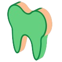

CLIC — encontrar e classificar caninos impactados em uma CBCT
O CLIC percorre uma CBCT corte a corte e sinaliza os caninos impactados, indicando para cada um onde ele se situa em relação ao osso: vestibular, bicortical ou palatino. Você parte do volume bruto — sem necessidade de segmentação ou de landmarks prévios.
Enquanto a ferramenta roda, a barra de progresso fica em zero e nada aparece na cena do Slicer, mesmo depois que o processamento terminou. Não é um travamento: o arquivo de resultado é gravado em disco na pasta de saída de qualquer forma. Você precisa ir buscá-lo e carregá-lo você mesmo — veja abaixo onde ele fica.
Quando usar
Quando você tem uma CBCT com um ou mais caninos impactados e quer saber, sem inspecionar cada um a olho, de que lado da cortical óssea ele se situa. O CLIC não depende de outros módulos — você não precisa ter rodado AMASSS, ASO ou ALI antes.
O que você precisa, o que você obtém
A fornecer
- Uma pasta de exames CBCT em
.niiou.nii.gz - O modelo treinado, baixado uma única vez
- Uma pasta de saída, escolhida explicitamente
Você obtém
- Uma subpasta por exame, contendo um mapa de rótulos
.nii.gz - Três valores de voxel possíveis: vestibular, bicortical, palatino
- Sobreponível diretamente ao exame de origem, sem necessidade de registro
O seletor de arquivos também lista .nrrd, .mha e
.mhd. Não os use: o processamento só consegue ler
.nii/.nii.gz e falha nos outros formatos, seja lá o que o
seletor tenha permitido.
O módulo não tem nenhum caminho funcional no Windows, diga o que disser o README. Rode-o em uma instalação do Slicer no Linux.
Passo a passo
- Baixe o modelo. O botão dedicado busca a rede treinada. Faça isso uma única vez.
- Indique a pasta de entrada. Uma pasta plana de arquivos
.nii.gz— não uma pasta de subpastas. - Escolha uma pasta de saída. Esta etapa é obrigatória: sem ela, o processamento falha antes mesmo de começar.
- Execute. A primeira execução também configura o ambiente de cálculo, por isso demora mais do que as seguintes.
- Aguarde até o fim, mesmo que nada se mexa na tela. O processamento segue exame por exame, sem retorno visual entre eles.
Onde encontrar o resultado
Quando o processamento terminar, abra a pasta de saída que você escolheu: ela
contém uma subpasta por exame processado e, dentro de cada uma, um arquivo
.nii.gz com o sufixo mostrado na interface (seg por padrão).
Carregue você mesmo esse arquivo no Slicer como volume de segmentação — ele já está
alinhado ao exame de origem, sem necessidade de registro. Os valores 1, 2 e 3
correspondem respectivamente a vestibular, bicortical e palatino.
Se algo der errado
Não interrompe nem o cálculo em andamento nem o processo subjacente. Se você realmente precisar parar, feche o Slicer.
A construção da rede baixa pesos genéricos pré-treinados antes de aplicar por cima o modelo treinado. Sem conexão na primeira tentativa, o processamento falha.
Com mais de um arquivo de modelo na pasta de modelos, é usado aquele cujo nome
vem primeiro em ordem alfabética, sem nenhum aviso. Mantenha um único arquivo
.pth nessa pasta para evitar qualquer ambiguidade.
Para saber mais
O módulo ainda não tem publicação: sua única descrição pública é uma página de projeto NA-MIC.
Sobre o próprio CLIC
- NA-MIC Project Week 43, Montréal 2025 — Interpretable Deep Learning for the Detection and Classification of Impacted Canines and severity of root resorption. O relatório do projeto: o objetivo, os dados e em que ponto estava o trabalho naquele momento.
Em torno do método
- He et al., ICCV 2017 — Mask R-CNN. A arquitetura que o módulo executa: detectar objetos e produzir suas máscaras ao mesmo tempo.
- Swaity et al., Scientific Reports 2023 — Deep learning driven segmentation of maxillary impacted canine on cone beam computed tomography images. O mesmo problema abordado por outra equipe, com o erro medido em uma série independente.
- Pirayesh et al., BMC Oral Health 2024 — A hierarchical deep learning approach for diagnosing impacted canine-induced root resorption. Do lado da reabsorção radicular: como a gravidade é graduada e como isso se compara a um observador humano.
A bibliografia completa da ferramenta — o que foi encontrado, e o que foi procurado sem sucesso — está em suas fontes.
Como funciona de verdade → A página do Atlas: a rede única por trás da classificação e da localização, a limiarização que produz o mapa de rótulos e as falhas encontradas no código.